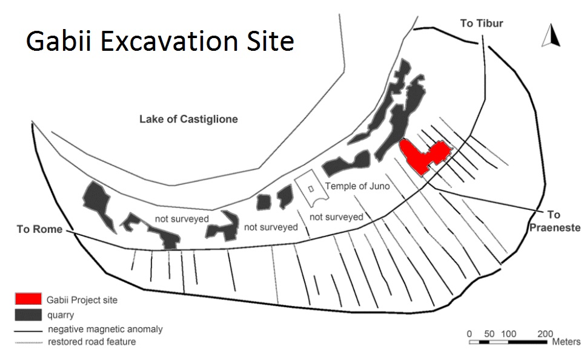

Gabii Italy Excavations
Check out the video below for a quick look at excavations at Gabii, Italy!
Gabii Background Information
Gabii, Italy is located east of Rome on the south-eastern perimeter of an ancient volcanic crater lake called Lacus Gabinus. Gabii was an ancient city of Latium and a rival of Rome in the millinium B.C. The site of Gabii was occupied from around the tenth century B.C. to its decline in the second and third centrues A.D. After its decline, Gabii was not developed further or even substantially occupied. Since Gabii eventually became a part of the Lation League and then subsequently part of the Roman Empire, there were many interactions between Rome and Gabii. Therefore, there is significant political and cultural heritage available to learn at Gabii.

Why Study Gabii
Due to the fact that Gabii existed for so many centuries, the history of Gabii is extensive. The considerable amount of interaction with Rome also increases the complexity of Gabii's history. Studying Gabii will help to archaeologists to understand Gabii's context with the larger orbit of Central Italy and the Roman Empire. Since Gabii is so well preserved and has urban planning, the excavation site allows for research on public and private architectual spaces. According to the Society of Fellows in the Humanities at Columbia University, the dozens of Imperial period burials found at Gabii reveal a population that was similar yet different from people buried in Rome. The variety of grave types at Gabii create an interest in learning more about Gabii burials.
Gabii Excavation Site Map
The picture below shows the Gabii Excavation Site. Area A and Area B - where the graves in our project come from - are marked by red and green lines respectively.
.jpg)
References
Much of the information on the "About Gabii" section tab of the website came directly from the official Gabii Project website through the University of Michigan. Please click on the link on the left side of the screen to view the Gabii Project website for more information.
Events | Civic Corpses: A Bioarchaeological Analysis of Imperial Gabii (Italy) | Society of Fellows in the Humanities at Columbia University http://societyoffellows.columbia.edu/events/civic-corpses/
Gabii Project https://sites.lsa.umich.edu/gabiiproject/